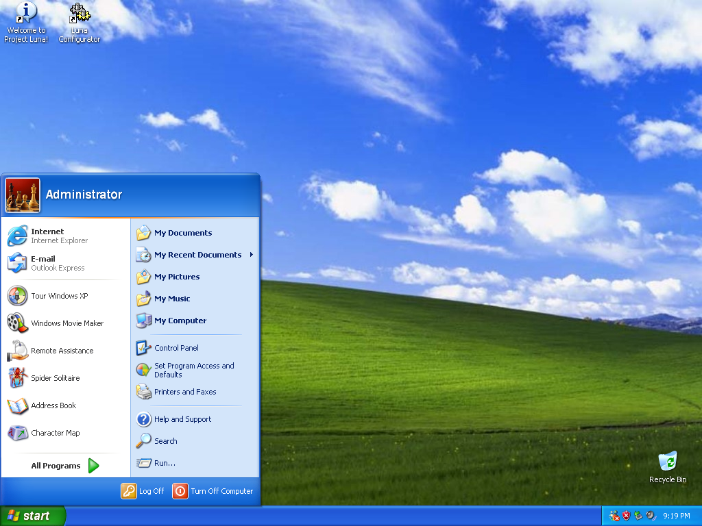
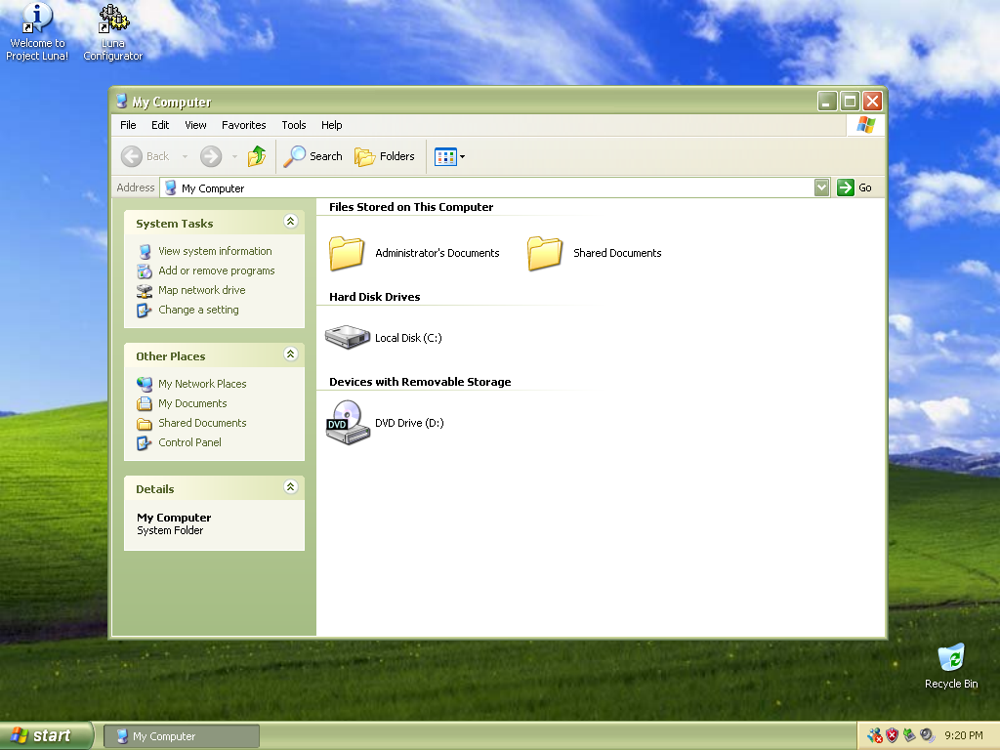
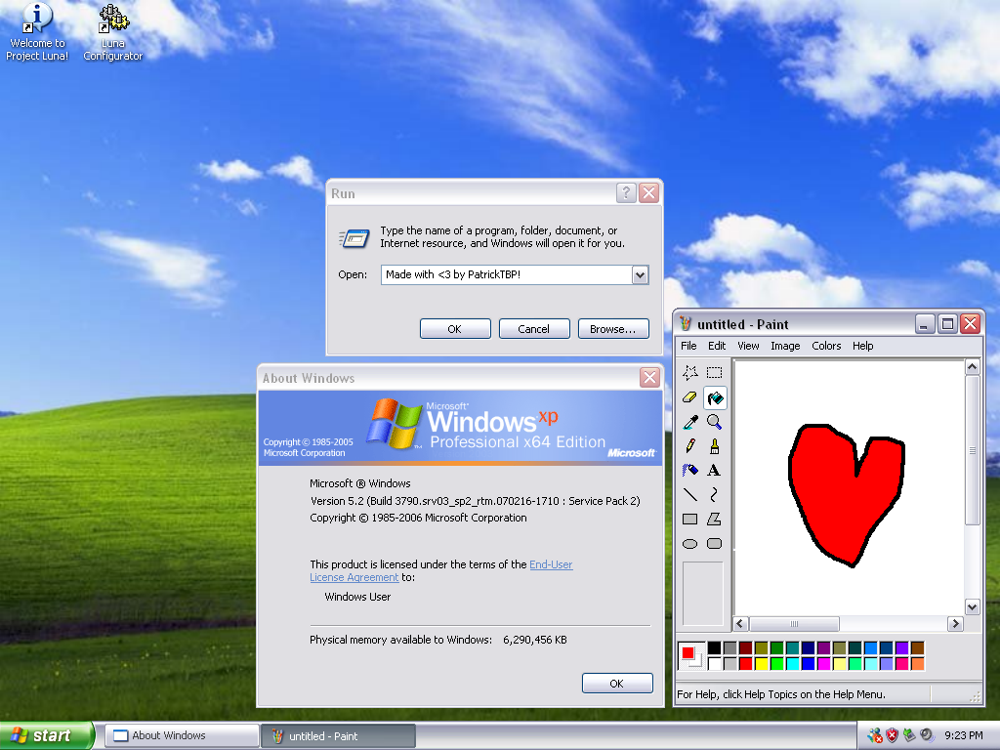

Project Luna is a 10toXP mod based off of Windows 10 21H2 (LTSC)
It is updated to the 2025-04 security updates for Windows 10, and LTSC's end of life year is 2032!
It is meant to replicate Windows XP to near perfect accuracy so you can feel like you are in 2001 again.
What are you waiting for? Download it now! (Version 1.0.1, July 20th, 2025)



- Do the original themes (Olive Green, Silver, Classic) exist in this mod?
- Yes.
- What Windows version does this mod use?
- This mod uses Windows 10 IoT Enterprise LTSC as it's base for the project.
- Are there any extra additions (Themes, sound schemes, etc.)
- There will be pretty soon, it is still in development and we will release it here on the site.
- Does this support other languages?
- No, but maybe in the future it will.
- Can I change my username / make a new account?
- For changing your username, yes you can. For making a new account, no you can't.
- Are you the one who made the original Project Luna?
-
Yes, and I'm not proud of it. It was one of my first, and worst Windows mods.
Since then I have improved a lot, you can see in the screenshots above. - What is your Discord server?
- You can join it here: https://discord.gg/QYEM9JVY8e